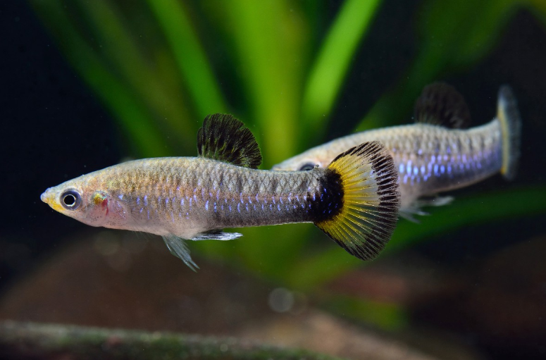
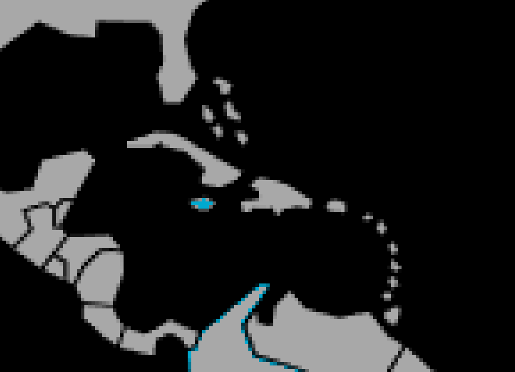

Systématique
- Ordre : Cyprinodontiformes
- Famille : Poeciliidae
- Genre : Limia
- Espèce : L. melanogaster
- Auteur : Günther, 1866

Limia melanogaster, la limia à ventre noir ou limia bleu, est un petit poéciliidé vivipare endémique de la Jamaïque, peu fréquent en aquariophilie. C'est l'une des plus anciennes espèces du genre Limia et aussi l'une des plus basales, s'étant séparée des autres espèces du genre il y a environ 22,8 millions d'années.
Le mâle atteint 4 cm de longueur standard, tandis que la femelle mesure 5 cm. C'est la deuxième espèce la plus élancée du genre après Limia zonata. Le corps est fusiforme et comprimé latéralement. Le coloris de base est gris-vert ou gris-bleuâtre avec un éclat métallique acier intense, particulièrement visible sur le mâle en situation d'approche courtoise. Présence de 7 bandes verticales transversales discrètes sur la partie arrière du corps.
Le mâle affiche une coloration très caractéristique : le pédoncule caudal et la nageoire dorsale sont noirs, tandis que la nageoire caudale est jaune vif rehaussée d'une bordure noire. Des taches noires et jaune soufre irradient la tête, les nageoires et les flancs, particulièrement lors du combat ou de la parade nuptiale. La femelle est moins colorée, gris-vert terne, dépourvue de la tache caudrale caractéristique des mâles. Spécificité unique : la femelle sexuellement mature affiche une large zone pigmentée bleu-noir autour de la papille génitale (gravid spot), trait unique au genre Limia.
Limia melanogaster est une espèce grégaire et active, occupant naturellement les zones de surface et médiane des cours d'eau rapides. Elle vit en bancs sans hiérarchie marquée, mais les mâles montrent une agression territoriale envers les congénères.
L'espèce demande impérativement un ratio de 2–3 femelles minimum par mâle pour limiter le harcèlement reproducteur persistant des mâles. Elle apprécie une végétation dense en surface et des zones ouvertes de nage. Contrairement à d'autres limias, elle affiche une activité essentiellement diurne. Elle se nourrit avidement d'aufwuchs (biofilm d'algues et micro-organismes) dans son habitat d'origine. L'espèce peut sauter hors de l'eau et le bac doit être couvert.
Mode : ovovivipare; le mâle possède un gonopodium bien visible permettant la fécondation directe. Les mâles dominants sont polygames et se reproduisent chaque saison avec plusieurs femelles.
La gestation dure 4 à 6 semaines selon la température. Les femelles donnent naissance à 20 à 50 alevins par portée, bien que certaines sources rapportent jusqu'à 100 jeunes selon l'âge et la condition de la femelle. Une seule fécondation permet à la femelle de produire plusieurs portées consécutives sans nouveau mâle.
Les alevins naissent grands (environ 1 cm) et autonomes, acceptant immédiatement les nauplii d'artémia nouvellement éclos ou les poudres de flocons. La croissance est modérée et la coloration juvénile diffère des adultes. Les jeunes atteignent la maturité sexuelle vers 2–3 mois en conditions optimales.
Dimorphisme sexuel : très marqué et distinctif; le mâle est notablement plus petit, plus coloré et plus élancé que la femelle. Le mâle affiche le pédoncule caudal noir et les taches de couleur jaune soufre tandis que la femelle reste gris-vert terne. La femelle présente un ventre plus arrondi et la zone distinctive bleu-noir autour de la papille génitale lors de la maturation.
Espérance de vie : données incomplètes, probablement 3 à 5 ans en captivité en conditions optimales. L'espèce demeure peu étudiée en élevage.
Limia melanogaster fréquente les ruisseaux rapides et peu profonds (environ 50 cm de profondeur typiquement) des régions sud et ouest de la Jamaïque, principalement dans les bassins des rivières Black River et Blue Hole River. L'habitat affiche une grande variabilité : petits ruisseaux de 10–20 cm de profondeur à substrat vaseux, ou sections rocheuses plus grandes. La végétation aquatique naturelle est rare ou absente, mais l'aufwuchs (algues biofilm) est abondant et constitue l'essentiel de la nourriture.
L'eau est très dure, alcaline (pH supérieur à 7,5), riche en minéraux dissous. L'espèce affectionne les zones temporairement inondées et occupe les eaux bien oxygénées avec courant modéré à rapide.
Répartition

Origine naturelle :
- Jamaïque, endémique des régions sud et ouest de l'île.
- Localités principales : bassins hydrographiques de la rivière Black River et Blue Hole River.
- Habitats fragmentés et discontinus dans les ruisseaux côtiers des versants sud et ouest.
L'espèce reste extrêmement rare en aquariophilie commerciale et n'a pratiquement jamais été importée massivement. Elle reste une espèce de collection pour aquariophiles confirmés. Pas d'introduction signalée en dehors de l'aire d'origine.
Paramètres de maintenance
Température : 22 à 28 °C, idéalement 26–27 °C.
pH : 7,0 à 8,5, fortement alcalin à neutre; l'espèce préfère pH supérieur à 7,5 comme en nature.
GH : 10 à 20 °dGH minimum, eau très dure à dure; obligatoire pour maintenir les paramètres naturels.
Courant : modéré à rapide; essentiellement requis pour reproduire l'habitat naturel et la circulation de l'oxygène.
Volume conseillé : minimum 60–80 L pour un petit groupe malgré la petite taille; une bonne longueur de bac (100 cm minimum) est préférée à la profondeur pour offrir des zones de nage continue.
Régime alimentaire
Régime : insectivore omnivore à tendance algivore; se nourrit d'aufwuchs, petits vers, crustacés, insectes aquatiques et matière végétale en nature.
En aquarium, accepte flocons fins, granulés, nourritures congelées (daphnies, artémias, vers de vase), paillettes et nourriture vivante. L'espèce grignote volontiers les algues naturelles et l'aufwuchs se développant aux parois du bac. Une alimentation variée avec accent sur les petits insectes vivants et l'algivore maintient la vivacité et les couleurs.
Distribution 2 à 3 fois par jour en petites quantités. L'introduction d'additifs algivores (spiruline, paillettes à base de végétal) améliore la condition générale et la longévité.